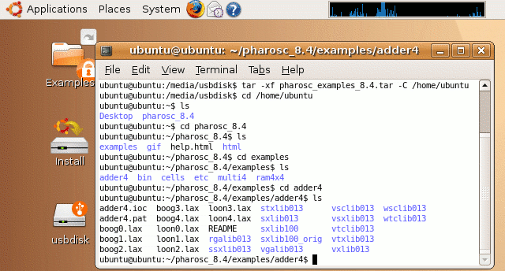
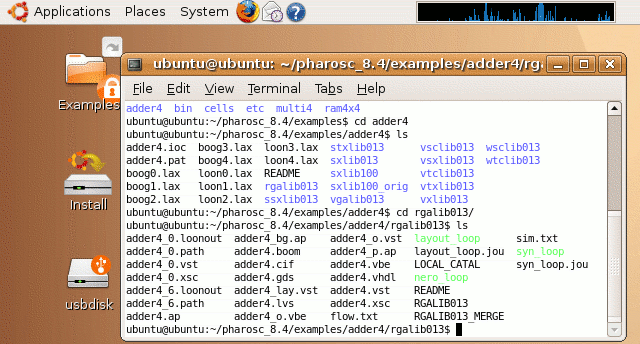
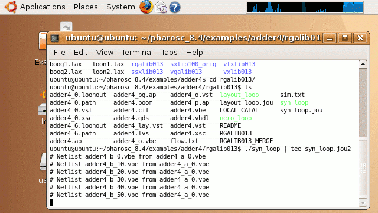

| vlsitechnology.org /Live CD help /running example | |
Running an example | |
Linux help
Windows help
Linux Live CD
The adder4 example has some common files and directories for each of the different technologies. A README file offers more information.

The file flow.txt shows the command syntax. The script syn_loop will loop the Alliance synthesis to find the fastest netlist. The layout_loop will run the layout. For some libraries, the layout will cause DRC violations, so the layout is looped until there are no more violations.

The command shown starts the synthesis script. Output is written to the journal file syn_loop.jou2 and also to the terminal window.
Note how the CPU activity has risen to 100% in the System Monitor in the panel, showing that the job is running (as well as the output scrolled to the terminal window).
The Alliance synthesis and layout command are all in the examples/bin directory.
